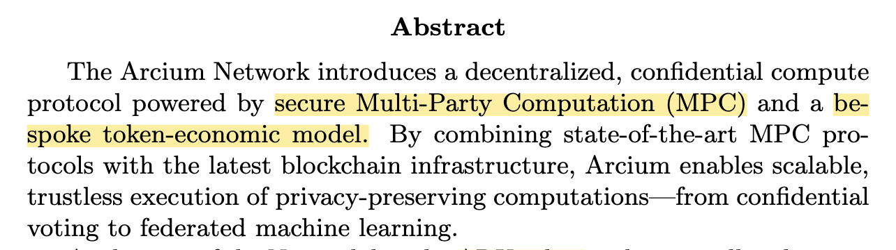
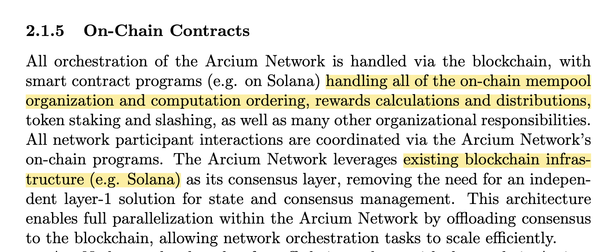
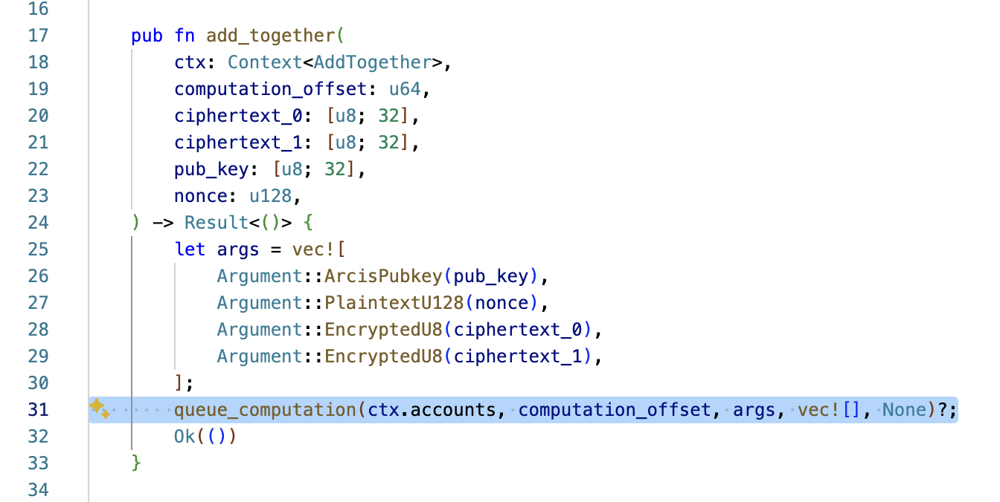
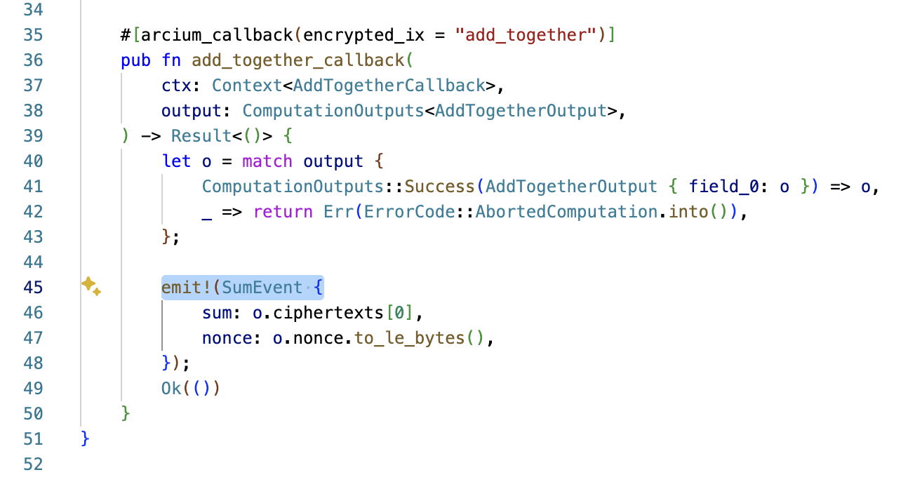
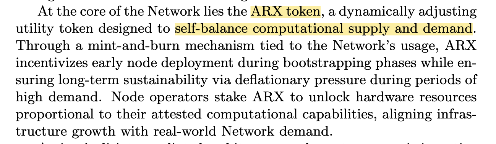

Arcium Network is the first project in the Solana ecosystem focused on privacy computing. In May this year, it secured $50 million in funding led by GreenField, as announced in this funding post.
According to Arcium’s Purplepaper, the project is a decentralized privacy computing protocol composed mainly of two core components: MPC and its economic model:
The overall structure of Arcium is not difficult to grasp, especially its integration with blockchain—it directly uses Solana smart contracts:
However, Arcium is built on a strong foundation of hardcore technologies. For instance, in this blog post, Arcium explains the principles of MPC (Secure Multi-Party Computation) through simplified examples.
MPC is not a new concept—it has been around for many years. A well-known application is MPC wallets, used by Binance and OKX. From a learning standpoint, it’s useful to distinguish between MPC, multisig, MPC wallets, TSS (Threshold Signature Scheme), and BLS aggregated signatures—terms that are related but often confused.
In Arcium’s simplified example: suppose three parties a, b, and c are computing values +1, +2, +3, and they each add salts of +10, +20, +30 respectively. The total becomes 66. Removing the combined salt (60) results in the final value of 6.
The desalinization process is sequential—each party removes its salt in turn. No single party knows the entire execution sequence. According to protocol design, such information is not public.
In reality, MPC is a complex interactive protocol that requires significant engineering. Arcium is working to expand the practical applications of this cryptographic technology—a worthwhile direction.
Arcium is exploring various technical areas, such as the Confidential SPL Token, which combines Solana’s SPL token standard, Token-2022, and Arcium’s MPC aggregation architecture to create a privacy-enabled token. They’ve also developed Dapps like on-chain Dark Pools—technically impressive.
Arcium’s architecture may look complex at first glance, with terms like MXEs, arxOS, and Arcis. This is a typical “concept invention” tactic—naming internal components with fancy terms rather than using widely understood technical names.
A better understanding comes from the developer-focused documentation. As a developer using Arcium, you are essentially writing Solana smart contracts. You create your own contract (an MXE program) to describe the computation task, such as an addition operation (a + b = c). This logic is deployed on-chain, then calls an official Arcium contract (Arcium Program) to submit the task into Arcium’s task pool:
The Arcium Program detects the task, and the MPC Cluster (arxOS) observes this on-chain event and initiates computation. Once complete, the result is submitted back to the Arcium Program on-chain. Your MXE program includes a callback function to receive the result and notify the client:
The types of computations you can implement (e.g., addition, subtraction, division) depend on what Arcium’s framework supports.
Stripping away the fancy terms, Arcium’s process is: submit computation tasks via on-chain contracts, let off-chain nodes compute, and return results on-chain. Their real strength lies in mastering MPC and providing a developer-friendly contract framework.
Arcium calls its computation nodes StakHodlers. It’s a bit complex, but in short: you can either provide hardware and go through setup to participate as a computation node and earn rewards, or you can delegate your ARX tokens to nodes to earn interest.
The economic model is described in the Purplepaper. The total supply of ARX tokens adjusts automatically based on network usage to maintain balance:
The idea is to balance staking at 50%—if it drops below 50%, the protocol mints more ARX; if it exceeds 50%, it burns ARX. This favors active participants and node operators. However, it may be unfavorable for non-stakers, since minting doesn’t benefit them and burning reduces supply. It amplifies some issues found in Ethereum’s PoS model.
That said, Arcium’s burn model differs from Ethereum’s. Arcium collects protocol fees in SOL and uses Dutch auctions to convert SOL into ARX, which is then burned. This introduces a more complex dynamic to supply that warrants closer observation.
In summary, both the technical architecture and the economic model of Arcium are well thought out and form a complete system. There’s significant potential here. Arcium Network is currently in its testnet phase, with its roadmap still outlining mainnet launch plans.